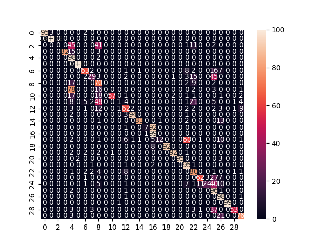
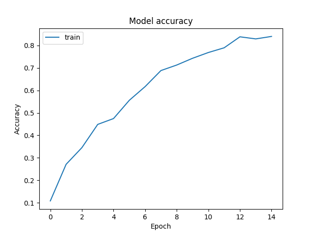
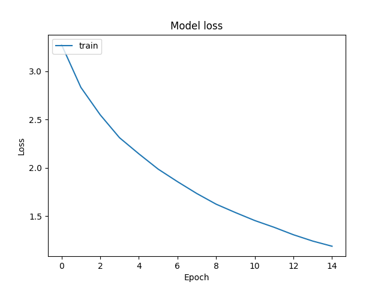

<!doctype html>
<html class="no-js" lang="en" data-content_root="../../">
  <head><meta charset="utf-8"/>
    <meta name="viewport" content="width=device-width,initial-scale=1"/>
    <meta name="color-scheme" content="light dark"><meta name="generator" content="Docutils 0.18.1: http://docutils.sourceforge.net/" />
<link rel="index" title="Index" href="../../genindex.html" /><link rel="search" title="Search" href="../../search.html" /><link rel="next" title="Generate synthetic spectra" href="../vii-synth/plot_i_endmembers.html" /><link rel="prev" title="Integrative analysis: Support Vector Machine (SVM) classification" href="plot_iv_integrative_svm.html" />

    <!-- Generated with Sphinx 7.2.6 and Furo 2023.09.10 -->
        <title>Integrative analysis: Neural Network (NN) classification - RamanSPy</title>
      <link rel="stylesheet" type="text/css" href="../../_static/pygments.css?v=362ab14a" />
    <link rel="stylesheet" type="text/css" href="../../_static/styles/furo.css?v=135e06be" />
    <link rel="stylesheet" type="text/css" href="../../_static/plot_directive.css?v=7f9a90b1" />
    <link rel="stylesheet" type="text/css" href="../../_static/copybutton.css?v=76b2166b" />
    <link rel="stylesheet" type="text/css" href="../../_static/sg_gallery.css?v=61a4c737" />
    <link rel="stylesheet" type="text/css" href="../../_static/sg_gallery-binder.css?v=f4aeca0c" />
    <link rel="stylesheet" type="text/css" href="../../_static/sg_gallery-dataframe.css?v=2082cf3c" />
    <link rel="stylesheet" type="text/css" href="../../_static/sg_gallery-rendered-html.css?v=1277b6f3" />
    <link rel="stylesheet" type="text/css" href="../../_static/styles/furo-extensions.css?v=36a5483c" />
    
    


<style>
  body {
    --color-code-background: #f8f8f8;
  --color-code-foreground: black;
  --color-brand-primary: #7C4DFF;
  --color-brand-content: #7C4DFF;
  
  }
  @media not print {
    body[data-theme="dark"] {
      --color-code-background: #202020;
  --color-code-foreground: #d0d0d0;
  
    }
    @media (prefers-color-scheme: dark) {
      body:not([data-theme="light"]) {
        --color-code-background: #202020;
  --color-code-foreground: #d0d0d0;
  
      }
    }
  }
</style></head>
  <body>
    
    <script>
      document.body.dataset.theme = localStorage.getItem("theme") || "auto";
    </script>
    

<svg xmlns="http://www.w3.org/2000/svg" style="display: none;">
  <symbol id="svg-toc" viewBox="0 0 24 24">
    <title>Contents</title>
    <svg stroke="currentColor" fill="currentColor" stroke-width="0" viewBox="0 0 1024 1024">
      <path d="M408 442h480c4.4 0 8-3.6 8-8v-56c0-4.4-3.6-8-8-8H408c-4.4 0-8 3.6-8 8v56c0 4.4 3.6 8 8 8zm-8 204c0 4.4 3.6 8 8 8h480c4.4 0 8-3.6 8-8v-56c0-4.4-3.6-8-8-8H408c-4.4 0-8 3.6-8 8v56zm504-486H120c-4.4 0-8 3.6-8 8v56c0 4.4 3.6 8 8 8h784c4.4 0 8-3.6 8-8v-56c0-4.4-3.6-8-8-8zm0 632H120c-4.4 0-8 3.6-8 8v56c0 4.4 3.6 8 8 8h784c4.4 0 8-3.6 8-8v-56c0-4.4-3.6-8-8-8zM115.4 518.9L271.7 642c5.8 4.6 14.4.5 14.4-6.9V388.9c0-7.4-8.5-11.5-14.4-6.9L115.4 505.1a8.74 8.74 0 0 0 0 13.8z"/>
    </svg>
  </symbol>
  <symbol id="svg-menu" viewBox="0 0 24 24">
    <title>Menu</title>
    <svg xmlns="http://www.w3.org/2000/svg" viewBox="0 0 24 24" fill="none" stroke="currentColor"
      stroke-width="2" stroke-linecap="round" stroke-linejoin="round" class="feather-menu">
      <line x1="3" y1="12" x2="21" y2="12"></line>
      <line x1="3" y1="6" x2="21" y2="6"></line>
      <line x1="3" y1="18" x2="21" y2="18"></line>
    </svg>
  </symbol>
  <symbol id="svg-arrow-right" viewBox="0 0 24 24">
    <title>Expand</title>
    <svg xmlns="http://www.w3.org/2000/svg" viewBox="0 0 24 24" fill="none" stroke="currentColor"
      stroke-width="2" stroke-linecap="round" stroke-linejoin="round" class="feather-chevron-right">
      <polyline points="9 18 15 12 9 6"></polyline>
    </svg>
  </symbol>
  <symbol id="svg-sun" viewBox="0 0 24 24">
    <title>Light mode</title>
    <svg xmlns="http://www.w3.org/2000/svg" viewBox="0 0 24 24" fill="none" stroke="currentColor"
      stroke-width="1.5" stroke-linecap="round" stroke-linejoin="round" class="feather-sun">
      <circle cx="12" cy="12" r="5"></circle>
      <line x1="12" y1="1" x2="12" y2="3"></line>
      <line x1="12" y1="21" x2="12" y2="23"></line>
      <line x1="4.22" y1="4.22" x2="5.64" y2="5.64"></line>
      <line x1="18.36" y1="18.36" x2="19.78" y2="19.78"></line>
      <line x1="1" y1="12" x2="3" y2="12"></line>
      <line x1="21" y1="12" x2="23" y2="12"></line>
      <line x1="4.22" y1="19.78" x2="5.64" y2="18.36"></line>
      <line x1="18.36" y1="5.64" x2="19.78" y2="4.22"></line>
    </svg>
  </symbol>
  <symbol id="svg-moon" viewBox="0 0 24 24">
    <title>Dark mode</title>
    <svg xmlns="http://www.w3.org/2000/svg" viewBox="0 0 24 24" fill="none" stroke="currentColor"
      stroke-width="1.5" stroke-linecap="round" stroke-linejoin="round" class="icon-tabler-moon">
      <path stroke="none" d="M0 0h24v24H0z" fill="none" />
      <path d="M12 3c.132 0 .263 0 .393 0a7.5 7.5 0 0 0 7.92 12.446a9 9 0 1 1 -8.313 -12.454z" />
    </svg>
  </symbol>
  <symbol id="svg-sun-half" viewBox="0 0 24 24">
    <title>Auto light/dark mode</title>
    <svg xmlns="http://www.w3.org/2000/svg" viewBox="0 0 24 24" fill="none" stroke="currentColor"
      stroke-width="1.5" stroke-linecap="round" stroke-linejoin="round" class="icon-tabler-shadow">
      <path stroke="none" d="M0 0h24v24H0z" fill="none"/>
      <circle cx="12" cy="12" r="9" />
      <path d="M13 12h5" />
      <path d="M13 15h4" />
      <path d="M13 18h1" />
      <path d="M13 9h4" />
      <path d="M13 6h1" />
    </svg>
  </symbol>
</svg>

<input type="checkbox" class="sidebar-toggle" name="__navigation" id="__navigation">
<input type="checkbox" class="sidebar-toggle" name="__toc" id="__toc">
<label class="overlay sidebar-overlay" for="__navigation">
  <div class="visually-hidden">Hide navigation sidebar</div>
</label>
<label class="overlay toc-overlay" for="__toc">
  <div class="visually-hidden">Hide table of contents sidebar</div>
</label>


<div class="page">
  <header class="mobile-header">
    <div class="header-left">
      <label class="nav-overlay-icon" for="__navigation">
        <div class="visually-hidden">Toggle site navigation sidebar</div>
        <i class="icon"><svg><use href="#svg-menu"></use></svg></i>
      </label>
    </div>
    <div class="header-center">
      <a href="../../index.html"><div class="brand">RamanSPy</div></a>
    </div>
    <div class="header-right">
      <div class="theme-toggle-container theme-toggle-header">
        <button class="theme-toggle">
          <div class="visually-hidden">Toggle Light / Dark / Auto color theme</div>
          <svg class="theme-icon-when-auto"><use href="#svg-sun-half"></use></svg>
          <svg class="theme-icon-when-dark"><use href="#svg-moon"></use></svg>
          <svg class="theme-icon-when-light"><use href="#svg-sun"></use></svg>
        </button>
      </div>
      <label class="toc-overlay-icon toc-header-icon no-toc" for="__toc">
        <div class="visually-hidden">Toggle table of contents sidebar</div>
        <i class="icon"><svg><use href="#svg-toc"></use></svg></i>
      </label>
    </div>
  </header>
  <aside class="sidebar-drawer">
    <div class="sidebar-container">
      
      <div class="sidebar-sticky"><a class="sidebar-brand" href="../../index.html">
  
  <div class="sidebar-logo-container">
    
  </div>
  
  
</a><form class="sidebar-search-container" method="get" action="../../search.html" role="search">
  <input class="sidebar-search" placeholder="Search" name="q" aria-label="Search">
  <input type="hidden" name="check_keywords" value="yes">
  <input type="hidden" name="area" value="default">
</form>
<div id="searchbox"></div><div class="sidebar-scroll"><div class="sidebar-tree">
  <p class="caption" role="heading"><span class="caption-text">Quick start:</span></p>
<ul>
<li class="toctree-l1"><a class="reference internal" href="../../overview.html">Overview</a></li>
<li class="toctree-l1"><a class="reference internal" href="../../installation.html">Installation</a></li>
</ul>
<p class="caption" role="heading"><span class="caption-text">Documentation:</span></p>
<ul>
<li class="toctree-l1"><a class="reference internal" href="../../data_classes.html">Data containers</a></li>
<li class="toctree-l1"><a class="reference internal" href="../../loading.html">Data loading</a></li>
<li class="toctree-l1"><a class="reference internal" href="../../datasets.html">Datasets</a></li>
<li class="toctree-l1"><a class="reference internal" href="../../metrics.html">Metrics</a></li>
<li class="toctree-l1"><a class="reference internal" href="../../plot.html">Data visualisation</a></li>
<li class="toctree-l1 has-children"><a class="reference internal" href="../../preprocessing.html">Preprocessing</a><input class="toctree-checkbox" id="toctree-checkbox-1" name="toctree-checkbox-1" role="switch" type="checkbox"/><label for="toctree-checkbox-1"><div class="visually-hidden">Toggle navigation of Preprocessing</div><i class="icon"><svg><use href="#svg-arrow-right"></use></svg></i></label><ul>
<li class="toctree-l2"><a class="reference internal" href="../../generated/prepprocessing/misc/ramanspy.preprocessing.misc.Cropper.html">ramanspy.preprocessing.misc.Cropper</a></li>
<li class="toctree-l2"><a class="reference internal" href="../../generated/prepprocessing/misc/ramanspy.preprocessing.misc.BackgroundSubtractor.html">ramanspy.preprocessing.misc.BackgroundSubtractor</a></li>
<li class="toctree-l2"><a class="reference internal" href="../../generated/prepprocessing/despiking/ramanspy.preprocessing.despike.WhitakerHayes.html">ramanspy.preprocessing.despike.WhitakerHayes</a></li>
<li class="toctree-l2"><a class="reference internal" href="../../generated/prepprocessing/denoising/ramanspy.preprocessing.denoise.SavGol.html">ramanspy.preprocessing.denoise.SavGol</a></li>
<li class="toctree-l2"><a class="reference internal" href="../../generated/prepprocessing/denoising/ramanspy.preprocessing.denoise.Whittaker.html">ramanspy.preprocessing.denoise.Whittaker</a></li>
<li class="toctree-l2"><a class="reference internal" href="../../generated/prepprocessing/denoising/ramanspy.preprocessing.denoise.Kernel.html">ramanspy.preprocessing.denoise.Kernel</a></li>
<li class="toctree-l2"><a class="reference internal" href="../../generated/prepprocessing/denoising/ramanspy.preprocessing.denoise.Gaussian.html">ramanspy.preprocessing.denoise.Gaussian</a></li>
<li class="toctree-l2"><a class="reference internal" href="../../generated/prepprocessing/baseline/ramanspy.preprocessing.baseline.ASLS.html">ramanspy.preprocessing.baseline.ASLS</a></li>
<li class="toctree-l2"><a class="reference internal" href="../../generated/prepprocessing/baseline/ramanspy.preprocessing.baseline.IASLS.html">ramanspy.preprocessing.baseline.IASLS</a></li>
<li class="toctree-l2"><a class="reference internal" href="../../generated/prepprocessing/baseline/ramanspy.preprocessing.baseline.AIRPLS.html">ramanspy.preprocessing.baseline.AIRPLS</a></li>
<li class="toctree-l2"><a class="reference internal" href="../../generated/prepprocessing/baseline/ramanspy.preprocessing.baseline.ARPLS.html">ramanspy.preprocessing.baseline.ARPLS</a></li>
<li class="toctree-l2"><a class="reference internal" href="../../generated/prepprocessing/baseline/ramanspy.preprocessing.baseline.DRPLS.html">ramanspy.preprocessing.baseline.DRPLS</a></li>
<li class="toctree-l2"><a class="reference internal" href="../../generated/prepprocessing/baseline/ramanspy.preprocessing.baseline.IARPLS.html">ramanspy.preprocessing.baseline.IARPLS</a></li>
<li class="toctree-l2"><a class="reference internal" href="../../generated/prepprocessing/baseline/ramanspy.preprocessing.baseline.ASPLS.html">ramanspy.preprocessing.baseline.ASPLS</a></li>
<li class="toctree-l2"><a class="reference internal" href="../../generated/prepprocessing/baseline/ramanspy.preprocessing.baseline.Poly.html">ramanspy.preprocessing.baseline.Poly</a></li>
<li class="toctree-l2"><a class="reference internal" href="../../generated/prepprocessing/baseline/ramanspy.preprocessing.baseline.ModPoly.html">ramanspy.preprocessing.baseline.ModPoly</a></li>
<li class="toctree-l2"><a class="reference internal" href="../../generated/prepprocessing/baseline/ramanspy.preprocessing.baseline.Poly.html">ramanspy.preprocessing.baseline.Poly</a></li>
<li class="toctree-l2"><a class="reference internal" href="../../generated/prepprocessing/baseline/ramanspy.preprocessing.baseline.ModPoly.html">ramanspy.preprocessing.baseline.ModPoly</a></li>
<li class="toctree-l2"><a class="reference internal" href="../../generated/prepprocessing/baseline/ramanspy.preprocessing.baseline.Goldindec.html">ramanspy.preprocessing.baseline.Goldindec</a></li>
<li class="toctree-l2"><a class="reference internal" href="../../generated/prepprocessing/baseline/ramanspy.preprocessing.baseline.IRSQR.html">ramanspy.preprocessing.baseline.IRSQR</a></li>
<li class="toctree-l2"><a class="reference internal" href="../../generated/prepprocessing/baseline/ramanspy.preprocessing.baseline.CornerCutting.html">ramanspy.preprocessing.baseline.CornerCutting</a></li>
<li class="toctree-l2"><a class="reference internal" href="../../generated/prepprocessing/baseline/ramanspy.preprocessing.baseline.FABC.html">ramanspy.preprocessing.baseline.FABC</a></li>
<li class="toctree-l2"><a class="reference internal" href="../../generated/prepprocessing/norm/ramanspy.preprocessing.normalise.Vector.html">ramanspy.preprocessing.normalise.Vector</a></li>
<li class="toctree-l2"><a class="reference internal" href="../../generated/prepprocessing/norm/ramanspy.preprocessing.normalise.MinMax.html">ramanspy.preprocessing.normalise.MinMax</a></li>
<li class="toctree-l2"><a class="reference internal" href="../../generated/prepprocessing/norm/ramanspy.preprocessing.normalise.MaxIntensity.html">ramanspy.preprocessing.normalise.MaxIntensity</a></li>
<li class="toctree-l2"><a class="reference internal" href="../../generated/prepprocessing/norm/ramanspy.preprocessing.normalise.AUC.html">ramanspy.preprocessing.normalise.AUC</a></li>
<li class="toctree-l2"><a class="reference internal" href="../../generated/prepprocessing/protocols/ramanspy.preprocessing.protocols.default.html">ramanspy.preprocessing.protocols.default</a></li>
<li class="toctree-l2"><a class="reference internal" href="../../generated/prepprocessing/protocols/ramanspy.preprocessing.protocols.default_fingerprint.html">ramanspy.preprocessing.protocols.default_fingerprint</a></li>
<li class="toctree-l2"><a class="reference internal" href="../../generated/prepprocessing/protocols/ramanspy.preprocessing.protocols.articular_cartilage.html">ramanspy.preprocessing.protocols.articular_cartilage</a></li>
</ul>
</li>
<li class="toctree-l1 has-children"><a class="reference internal" href="../../analysis.html">Analysis</a><input class="toctree-checkbox" id="toctree-checkbox-2" name="toctree-checkbox-2" role="switch" type="checkbox"/><label for="toctree-checkbox-2"><div class="visually-hidden">Toggle navigation of Analysis</div><i class="icon"><svg><use href="#svg-arrow-right"></use></svg></i></label><ul>
<li class="toctree-l2"><a class="reference internal" href="../../generated/analysis/decompose/ramanspy.analysis.decompose.PCA.html">ramanspy.analysis.decompose.PCA</a></li>
<li class="toctree-l2"><a class="reference internal" href="../../generated/analysis/decompose/ramanspy.analysis.decompose.NMF.html">ramanspy.analysis.decompose.NMF</a></li>
<li class="toctree-l2"><a class="reference internal" href="../../generated/analysis/decompose/ramanspy.analysis.decompose.ICA.html">ramanspy.analysis.decompose.ICA</a></li>
<li class="toctree-l2"><a class="reference internal" href="../../generated/analysis/cluster/ramanspy.analysis.cluster.KMeans.html">ramanspy.analysis.cluster.KMeans</a></li>
<li class="toctree-l2"><a class="reference internal" href="../../generated/analysis/unmix/ramanspy.analysis.unmix.PPI.html">ramanspy.analysis.unmix.PPI</a></li>
<li class="toctree-l2"><a class="reference internal" href="../../generated/analysis/unmix/ramanspy.analysis.unmix.FIPPI.html">ramanspy.analysis.unmix.FIPPI</a></li>
<li class="toctree-l2"><a class="reference internal" href="../../generated/analysis/unmix/ramanspy.analysis.unmix.NFINDR.html">ramanspy.analysis.unmix.NFINDR</a></li>
<li class="toctree-l2"><a class="reference internal" href="../../generated/analysis/unmix/ramanspy.analysis.unmix.VCA.html">ramanspy.analysis.unmix.VCA</a></li>
</ul>
</li>
<li class="toctree-l1"><a class="reference internal" href="../../synth.html">Synthetic data</a></li>
</ul>
<p class="caption" role="heading"><span class="caption-text">Gallery:</span></p>
<ul class="current">
<li class="toctree-l1 current has-children"><a class="reference internal" href="../index.html">Tutorials</a><input checked="" class="toctree-checkbox" id="toctree-checkbox-3" name="toctree-checkbox-3" role="switch" type="checkbox"/><label for="toctree-checkbox-3"><div class="visually-hidden">Toggle navigation of Tutorials</div><i class="icon"><svg><use href="#svg-arrow-right"></use></svg></i></label><ul class="current">
<li class="toctree-l2"><a class="reference internal" href="../i-classes/plot_i_generic_container.html">Storing generic data</a></li>
<li class="toctree-l2"><a class="reference internal" href="../i-classes/plot_ii_spectrum_container.html">Storing spectra</a></li>
<li class="toctree-l2"><a class="reference internal" href="../i-classes/plot_iii_image_container.html">Storing imaging data</a></li>
<li class="toctree-l2"><a class="reference internal" href="../i-classes/plot_iv_volume_container.html">Storing volumetric data</a></li>
<li class="toctree-l2"><a class="reference internal" href="../ii-instrumental/i_witec.html">Loading WITec data</a></li>
<li class="toctree-l2"><a class="reference internal" href="../ii-instrumental/ii_renishaw.html">Loading Renishaw data</a></li>
<li class="toctree-l2"><a class="reference internal" href="../ii-instrumental/iii_ocean_insight.html">Loading Ocean Insight data</a></li>
<li class="toctree-l2"><a class="reference internal" href="../ii-instrumental/iv_other.html">Loading other data</a></li>
<li class="toctree-l2"><a class="reference internal" href="../iii-datasets/ii_rruff.html">Loading the RRUFF dataset</a></li>
<li class="toctree-l2"><a class="reference internal" href="../iii-datasets/plot_i_bacteria.html">Loading the Bacteria dataset</a></li>
<li class="toctree-l2"><a class="reference internal" href="../iii-datasets/plot_ii_metrics.html">Using built-in metrics</a></li>
<li class="toctree-l2"><a class="reference internal" href="../iv-viz/plot_i_spectra.html">Visualising spectra</a></li>
<li class="toctree-l2"><a class="reference internal" href="../iv-viz/plot_ii_peaks.html">Visualising peaks</a></li>
<li class="toctree-l2"><a class="reference internal" href="../iv-viz/plot_ii_spectra_mean.html">Visualising spectral distributions</a></li>
<li class="toctree-l2"><a class="reference internal" href="../iv-viz/plot_iii_image.html">Visualising imaging data</a></li>
<li class="toctree-l2"><a class="reference internal" href="../iv-viz/plot_iv_volume.html">Visualising volumetric data</a></li>
<li class="toctree-l2"><a class="reference internal" href="../iv-viz/plot_v_peak_dist.html">Visualising peak distributions</a></li>
<li class="toctree-l2"><a class="reference internal" href="../iv-viz/plot_vi_customisation.html">Customising plots</a></li>
<li class="toctree-l2"><a class="reference internal" href="../v-preprocessing/plot_i_predefined_methods.html">Built-in methods</a></li>
<li class="toctree-l2"><a class="reference internal" href="../v-preprocessing/plot_ii_custom_method.html">Custom methods</a></li>
<li class="toctree-l2"><a class="reference internal" href="../v-preprocessing/plot_iii_custom_pipeline.html">Custom pipelines</a></li>
<li class="toctree-l2"><a class="reference internal" href="../v-preprocessing/plot_iv_predefined_pipeline.html">Built-in protocols</a></li>
<li class="toctree-l2"><a class="reference internal" href="plot_i_decomposition.html">Built-in decomposition methods</a></li>
<li class="toctree-l2"><a class="reference internal" href="plot_ii_kmeans.html">Built-in clustering methods</a></li>
<li class="toctree-l2"><a class="reference internal" href="plot_iii_unmixing.html">Built-in unmixing methods</a></li>
<li class="toctree-l2"><a class="reference internal" href="plot_iv_integrative_svm.html">Integrative analysis: Support Vector Machine (SVM) classification</a></li>
<li class="toctree-l2 current current-page"><a class="current reference internal" href="#">Integrative analysis: Neural Network (NN) classification</a></li>
<li class="toctree-l2"><a class="reference internal" href="../vii-synth/plot_i_endmembers.html">Generate synthetic spectra</a></li>
</ul>
</li>
<li class="toctree-l1 has-children"><a class="reference internal" href="../../auto_examples/index.html">Examples</a><input class="toctree-checkbox" id="toctree-checkbox-4" name="toctree-checkbox-4" role="switch" type="checkbox"/><label for="toctree-checkbox-4"><div class="visually-hidden">Toggle navigation of Examples</div><i class="icon"><svg><use href="#svg-arrow-right"></use></svg></i></label><ul>
<li class="toctree-l2"><a class="reference internal" href="../../auto_examples/plot_i_package_overview.html">Cell phenotyping</a></li>
<li class="toctree-l2"><a class="reference internal" href="../../auto_examples/plot_i_preprocessing_pipelines.html">Preprocessing pipelines</a></li>
<li class="toctree-l2"><a class="reference internal" href="../../auto_examples/plot_ii_dl_denoising.html">AI-based denoising</a></li>
<li class="toctree-l2"><a class="reference internal" href="../../auto_examples/plot_iii_bacteria_classification.html">Bacteria classification</a></li>
</ul>
</li>
</ul>
<p class="caption" role="heading"><span class="caption-text">Links</span></p>
<ul>
<li class="toctree-l1"><a class="reference external" href="https://github.com/barahona-research-group/RamanSPy">GitHub repository</a></li>
<li class="toctree-l1"><a class="reference external" href="https://chemrxiv.org/engage/chemrxiv/article-details/64a53861ba3e99daef8c9c51">Paper</a></li>
</ul>

</div>
</div>

      </div>
      
    </div>
  </aside>
  <div class="main">
    <div class="content">
      <div class="article-container">
        <a href="#" class="back-to-top muted-link">
          <svg xmlns="http://www.w3.org/2000/svg" viewBox="0 0 24 24">
            <path d="M13 20h-2V8l-5.5 5.5-1.42-1.42L12 4.16l7.92 7.92-1.42 1.42L13 8v12z"></path>
          </svg>
          <span>Back to top</span>
        </a>
        <div class="content-icon-container">
          
<div class="theme-toggle-container theme-toggle-content">
            <button class="theme-toggle">
              <div class="visually-hidden">Toggle Light / Dark / Auto color theme</div>
              <svg class="theme-icon-when-auto"><use href="#svg-sun-half"></use></svg>
              <svg class="theme-icon-when-dark"><use href="#svg-moon"></use></svg>
              <svg class="theme-icon-when-light"><use href="#svg-sun"></use></svg>
            </button>
          </div>
          <label class="toc-overlay-icon toc-content-icon no-toc" for="__toc">
            <div class="visually-hidden">Toggle table of contents sidebar</div>
            <i class="icon"><svg><use href="#svg-toc"></use></svg></i>
          </label>
        </div>
        <article role="main">
          <div class="sphx-glr-download-link-note admonition note">
<p class="admonition-title">Note</p>
<p><a class="reference internal" href="#sphx-glr-download-auto-tutorials-vi-analysis-plot-v-integrative-nn-py"><span class="std std-ref">Go to the end</span></a>
to download the full example code</p>
</div>
<section class="sphx-glr-example-title" id="integrative-analysis-neural-network-nn-classification">
<span id="sphx-glr-auto-tutorials-vi-analysis-plot-v-integrative-nn-py"></span><h1>Integrative analysis: Neural Network (NN) classification<a class="headerlink" href="#integrative-analysis-neural-network-nn-classification" title="Link to this heading"></a></h1>
<p>In this example, we will showcase <cite>RamanSPy’s</cite> integrability by integrating a Neural Network (NN)
model for the identification of different bacteria species.</p>
<p>To build the model, we will use the <a class="reference external" href="https://tensorflow.org/">tensorflow</a> Python framework, but similar integrative
analyses are possible with the rest of the Python machine learning and deep learning ecosystem.</p>
<p>The data we will use is the <a class="reference internal" href="../../datasets.html#bacteria-data"><span class="std std-ref">Bacteria data</span></a>, which is integrated into <cite>RamanSPy</cite>.</p>
<div class="highlight-default notranslate"><div class="highlight"><pre><span></span><span class="kn">import</span> <span class="nn">tensorflow</span> <span class="k">as</span> <span class="nn">tf</span>
<span class="kn">import</span> <span class="nn">numpy</span> <span class="k">as</span> <span class="nn">np</span>
<span class="kn">from</span> <span class="nn">sklearn.metrics</span> <span class="kn">import</span> <span class="n">accuracy_score</span><span class="p">,</span> <span class="n">confusion_matrix</span>
<span class="kn">from</span> <span class="nn">sklearn.utils</span> <span class="kn">import</span> <span class="n">shuffle</span>
<span class="kn">import</span> <span class="nn">seaborn</span> <span class="k">as</span> <span class="nn">sns</span>
<span class="kn">import</span> <span class="nn">matplotlib.pyplot</span> <span class="k">as</span> <span class="nn">plt</span>

<span class="kn">import</span> <span class="nn">ramanspy</span>
</pre></div>
</div>
<p>First, we will use <cite>RamanSPy</cite> to load the validation and testing bacteria datasets.</p>
<div class="highlight-default notranslate"><div class="highlight"><pre><span></span><span class="n">dir_</span> <span class="o">=</span> <span class="sa">r</span><span class="s2">&quot;../../../../data/bacteria_data&quot;</span>

<span class="n">X_train</span><span class="p">,</span> <span class="n">y_train</span> <span class="o">=</span> <span class="n">ramanspy</span><span class="o">.</span><span class="n">datasets</span><span class="o">.</span><span class="n">bacteria</span><span class="p">(</span><span class="s2">&quot;val&quot;</span><span class="p">,</span> <span class="n">folder</span><span class="o">=</span><span class="n">dir_</span><span class="p">)</span>
<span class="n">X_test</span><span class="p">,</span> <span class="n">y_test</span> <span class="o">=</span> <span class="n">ramanspy</span><span class="o">.</span><span class="n">datasets</span><span class="o">.</span><span class="n">bacteria</span><span class="p">(</span><span class="s2">&quot;test&quot;</span><span class="p">,</span> <span class="n">folder</span><span class="o">=</span><span class="n">dir_</span><span class="p">)</span>
</pre></div>
</div>
<p>Shuffling the dataset we will use to train the model.</p>
<div class="highlight-default notranslate"><div class="highlight"><pre><span></span><span class="n">X_train</span><span class="p">,</span> <span class="n">y_train</span> <span class="o">=</span> <span class="n">shuffle</span><span class="p">(</span><span class="n">X_train</span><span class="o">.</span><span class="n">flat</span><span class="o">.</span><span class="n">spectral_data</span><span class="p">,</span> <span class="n">y_train</span><span class="p">)</span>
</pre></div>
</div>
<p>Then, we construct the CNN model.</p>
<div class="highlight-default notranslate"><div class="highlight"><pre><span></span><span class="k">class</span> <span class="nc">NN</span><span class="p">(</span><span class="n">tf</span><span class="o">.</span><span class="n">keras</span><span class="o">.</span><span class="n">Model</span><span class="p">):</span>
    <span class="k">def</span> <span class="fm">__init__</span><span class="p">(</span><span class="bp">self</span><span class="p">,</span> <span class="n">input_dim</span><span class="p">,</span> <span class="n">output_dim</span><span class="p">):</span>
        <span class="nb">super</span><span class="p">()</span><span class="o">.</span><span class="fm">__init__</span><span class="p">()</span>

        <span class="bp">self</span><span class="o">.</span><span class="n">nn</span> <span class="o">=</span> <span class="n">tf</span><span class="o">.</span><span class="n">keras</span><span class="o">.</span><span class="n">models</span><span class="o">.</span><span class="n">Sequential</span><span class="p">()</span>
        <span class="bp">self</span><span class="o">.</span><span class="n">nn</span><span class="o">.</span><span class="n">add</span><span class="p">(</span><span class="n">tf</span><span class="o">.</span><span class="n">keras</span><span class="o">.</span><span class="n">Input</span><span class="p">(</span><span class="n">shape</span><span class="o">=</span><span class="p">(</span><span class="n">input_dim</span><span class="p">,)))</span>
        <span class="bp">self</span><span class="o">.</span><span class="n">nn</span><span class="o">.</span><span class="n">add</span><span class="p">(</span><span class="n">tf</span><span class="o">.</span><span class="n">keras</span><span class="o">.</span><span class="n">layers</span><span class="o">.</span><span class="n">Dense</span><span class="p">(</span><span class="n">output_dim</span><span class="p">,</span> <span class="n">activation</span><span class="o">=</span><span class="s1">&#39;softmax&#39;</span><span class="p">))</span>

    <span class="k">def</span> <span class="nf">call</span><span class="p">(</span><span class="bp">self</span><span class="p">,</span> <span class="n">x</span><span class="p">):</span>
        <span class="k">return</span> <span class="bp">self</span><span class="o">.</span><span class="n">nn</span><span class="p">(</span><span class="n">x</span><span class="p">)</span>
</pre></div>
</div>
<p>Initialising the model instance</p>
<div class="highlight-default notranslate"><div class="highlight"><pre><span></span><span class="n">learning_rate</span> <span class="o">=</span> <span class="mf">0.001</span>
<span class="n">batch_size</span> <span class="o">=</span> <span class="mi">32</span>
<span class="n">epochs</span> <span class="o">=</span> <span class="mi">15</span>
<span class="n">input_dim</span> <span class="o">=</span> <span class="n">X_train</span><span class="o">.</span><span class="n">shape</span><span class="p">[</span><span class="o">-</span><span class="mi">1</span><span class="p">]</span>
<span class="n">output_dim</span> <span class="o">=</span> <span class="nb">len</span><span class="p">(</span><span class="n">np</span><span class="o">.</span><span class="n">unique</span><span class="p">(</span><span class="n">y_train</span><span class="p">))</span>

<span class="n">opt</span> <span class="o">=</span> <span class="n">tf</span><span class="o">.</span><span class="n">keras</span><span class="o">.</span><span class="n">optimizers</span><span class="o">.</span><span class="n">Adam</span><span class="p">(</span><span class="n">learning_rate</span><span class="o">=</span><span class="n">learning_rate</span><span class="p">)</span>

<span class="n">model</span> <span class="o">=</span> <span class="n">NN</span><span class="p">(</span><span class="n">input_dim</span><span class="p">,</span> <span class="n">output_dim</span><span class="p">)</span>
<span class="n">model</span><span class="o">.</span><span class="n">compile</span><span class="p">(</span><span class="n">opt</span><span class="p">,</span> <span class="n">loss</span><span class="o">=</span><span class="s1">&#39;sparse_categorical_crossentropy&#39;</span><span class="p">,</span> <span class="n">metrics</span><span class="o">=</span><span class="p">[</span><span class="s1">&#39;accuracy&#39;</span><span class="p">])</span>
</pre></div>
</div>
<div class="sphx-glr-script-out highlight-none notranslate"><div class="highlight"><pre><span></span>WARNING:absl:At this time, the v2.11+ optimizer `tf.keras.optimizers.Adam` runs slowly on M1/M2 Macs, please use the legacy Keras optimizer instead, located at `tf.keras.optimizers.legacy.Adam`.
WARNING:absl:There is a known slowdown when using v2.11+ Keras optimizers on M1/M2 Macs. Falling back to the legacy Keras optimizer, i.e., `tf.keras.optimizers.legacy.Adam`.
</pre></div>
</div>
<p>Training the MLP model on the training dataset.</p>
<div class="highlight-default notranslate"><div class="highlight"><pre><span></span><span class="n">history</span> <span class="o">=</span> <span class="n">model</span><span class="o">.</span><span class="n">fit</span><span class="p">(</span><span class="n">X_train</span><span class="p">,</span> <span class="n">y_train</span><span class="p">,</span> <span class="n">epochs</span><span class="o">=</span><span class="n">epochs</span><span class="p">,</span> <span class="n">batch_size</span><span class="o">=</span><span class="n">batch_size</span><span class="p">,</span> <span class="n">verbose</span><span class="o">=</span><span class="mi">1</span><span class="p">)</span>
</pre></div>
</div>
<div class="sphx-glr-script-out highlight-none notranslate"><div class="highlight"><pre><span></span>Epoch 1/15

 1/94 [..............................] - ETA: 9s - loss: 3.5485 - accuracy: 0.0000e+00
94/94 [==============================] - 0s 424us/step - loss: 3.2961 - accuracy: 0.1080
Epoch 2/15

 1/94 [..............................] - ETA: 0s - loss: 2.9558 - accuracy: 0.2188
94/94 [==============================] - 0s 374us/step - loss: 2.8502 - accuracy: 0.2710
Epoch 3/15

 1/94 [..............................] - ETA: 0s - loss: 2.5721 - accuracy: 0.3125
94/94 [==============================] - 0s 370us/step - loss: 2.5477 - accuracy: 0.3453
Epoch 4/15

 1/94 [..............................] - ETA: 0s - loss: 2.4384 - accuracy: 0.3438
94/94 [==============================] - 0s 383us/step - loss: 2.3145 - accuracy: 0.4487
Epoch 5/15

 1/94 [..............................] - ETA: 0s - loss: 2.3003 - accuracy: 0.3125
94/94 [==============================] - 0s 377us/step - loss: 2.1487 - accuracy: 0.4747
Epoch 6/15

 1/94 [..............................] - ETA: 0s - loss: 2.2070 - accuracy: 0.4688
94/94 [==============================] - 0s 354us/step - loss: 1.9886 - accuracy: 0.5560
Epoch 7/15

 1/94 [..............................] - ETA: 0s - loss: 1.7524 - accuracy: 0.7500
94/94 [==============================] - 0s 355us/step - loss: 1.8573 - accuracy: 0.6170
Epoch 8/15

 1/94 [..............................] - ETA: 0s - loss: 1.7691 - accuracy: 0.6562
94/94 [==============================] - 0s 397us/step - loss: 1.7286 - accuracy: 0.6883
Epoch 9/15

 1/94 [..............................] - ETA: 0s - loss: 1.6185 - accuracy: 0.6562
94/94 [==============================] - 0s 384us/step - loss: 1.6281 - accuracy: 0.7130
Epoch 10/15

 1/94 [..............................] - ETA: 0s - loss: 1.6861 - accuracy: 0.6875
94/94 [==============================] - 0s 392us/step - loss: 1.5368 - accuracy: 0.7430
Epoch 11/15

 1/94 [..............................] - ETA: 0s - loss: 1.4050 - accuracy: 0.7188
94/94 [==============================] - 0s 373us/step - loss: 1.4515 - accuracy: 0.7687
Epoch 12/15

 1/94 [..............................] - ETA: 0s - loss: 1.4901 - accuracy: 0.9062
94/94 [==============================] - 0s 370us/step - loss: 1.3789 - accuracy: 0.7897
Epoch 13/15

 1/94 [..............................] - ETA: 0s - loss: 1.3397 - accuracy: 0.7812
94/94 [==============================] - 0s 365us/step - loss: 1.2948 - accuracy: 0.8387
Epoch 14/15

 1/94 [..............................] - ETA: 0s - loss: 1.4259 - accuracy: 0.7812
94/94 [==============================] - 0s 387us/step - loss: 1.2396 - accuracy: 0.8293
Epoch 15/15

 1/94 [..............................] - ETA: 0s - loss: 1.0361 - accuracy: 0.9375
94/94 [==============================] - 0s 356us/step - loss: 1.1803 - accuracy: 0.8403
</pre></div>
</div>
<p>Testing the trained model on the unseen testing dataset.</p>
<div class="highlight-default notranslate"><div class="highlight"><pre><span></span><span class="n">y_pred</span> <span class="o">=</span> <span class="n">model</span><span class="o">.</span><span class="n">predict</span><span class="p">(</span><span class="n">X_test</span><span class="o">.</span><span class="n">flat</span><span class="o">.</span><span class="n">spectral_data</span><span class="p">)</span>
<span class="n">y_pred</span> <span class="o">=</span> <span class="n">np</span><span class="o">.</span><span class="n">argmax</span><span class="p">(</span><span class="n">y_pred</span><span class="p">,</span> <span class="n">axis</span><span class="o">=</span><span class="mi">1</span><span class="p">)</span>

<span class="nb">print</span><span class="p">(</span><span class="sa">f</span><span class="s2">&quot;The accuracy of the NN model is: </span><span class="si">{</span><span class="n">accuracy_score</span><span class="p">(</span><span class="n">y_pred</span><span class="p">,</span><span class="w"> </span><span class="n">y_test</span><span class="p">)</span><span class="si">}</span><span class="s2">&quot;</span><span class="p">)</span>
</pre></div>
</div>
<div class="sphx-glr-script-out highlight-none notranslate"><div class="highlight"><pre><span></span> 1/94 [..............................] - ETA: 1s
94/94 [==============================] - 0s 240us/step
The accuracy of the NN model is: 0.675
</pre></div>
</div>
<p>Confusion matrix:</p>
<div class="highlight-default notranslate"><div class="highlight"><pre><span></span><span class="n">cf_matrix</span> <span class="o">=</span> <span class="n">confusion_matrix</span><span class="p">(</span><span class="n">y_test</span><span class="p">,</span> <span class="n">y_pred</span><span class="p">)</span>
<span class="n">sns</span><span class="o">.</span><span class="n">heatmap</span><span class="p">(</span><span class="n">cf_matrix</span><span class="p">,</span> <span class="n">annot</span><span class="o">=</span><span class="kc">True</span><span class="p">)</span>
<span class="n">plt</span><span class="o">.</span><span class="n">show</span><span class="p">()</span>
</pre></div>
</div>
<p>Accuracy profile:</p>
<div class="highlight-default notranslate"><div class="highlight"><pre><span></span><span class="n">plt</span><span class="o">.</span><span class="n">plot</span><span class="p">(</span><span class="n">history</span><span class="o">.</span><span class="n">history</span><span class="p">[</span><span class="s1">&#39;accuracy&#39;</span><span class="p">])</span>
<span class="n">plt</span><span class="o">.</span><span class="n">title</span><span class="p">(</span><span class="s1">&#39;Model accuracy&#39;</span><span class="p">)</span>
<span class="n">plt</span><span class="o">.</span><span class="n">ylabel</span><span class="p">(</span><span class="s1">&#39;Accuracy&#39;</span><span class="p">)</span>
<span class="n">plt</span><span class="o">.</span><span class="n">xlabel</span><span class="p">(</span><span class="s1">&#39;Epoch&#39;</span><span class="p">)</span>
<span class="n">plt</span><span class="o">.</span><span class="n">legend</span><span class="p">([</span><span class="s1">&#39;train&#39;</span><span class="p">,</span> <span class="s1">&#39;val&#39;</span><span class="p">],</span> <span class="n">loc</span><span class="o">=</span><span class="s1">&#39;upper left&#39;</span><span class="p">)</span>
<span class="n">plt</span><span class="o">.</span><span class="n">show</span><span class="p">()</span>
</pre></div>
</div>
<p>Loss profile:</p>
<div class="highlight-default notranslate"><div class="highlight"><pre><span></span><span class="n">plt</span><span class="o">.</span><span class="n">plot</span><span class="p">(</span><span class="n">history</span><span class="o">.</span><span class="n">history</span><span class="p">[</span><span class="s1">&#39;loss&#39;</span><span class="p">])</span>
<span class="n">plt</span><span class="o">.</span><span class="n">title</span><span class="p">(</span><span class="s1">&#39;Model loss&#39;</span><span class="p">)</span>
<span class="n">plt</span><span class="o">.</span><span class="n">ylabel</span><span class="p">(</span><span class="s1">&#39;Loss&#39;</span><span class="p">)</span>
<span class="n">plt</span><span class="o">.</span><span class="n">xlabel</span><span class="p">(</span><span class="s1">&#39;Epoch&#39;</span><span class="p">)</span>
<span class="n">plt</span><span class="o">.</span><span class="n">legend</span><span class="p">([</span><span class="s1">&#39;train&#39;</span><span class="p">,</span> <span class="s1">&#39;val&#39;</span><span class="p">],</span> <span class="n">loc</span><span class="o">=</span><span class="s1">&#39;upper left&#39;</span><span class="p">)</span>
<span class="n">plt</span><span class="o">.</span><span class="n">show</span><span class="p">()</span>
</pre></div>
</div>
<p class="sphx-glr-timing"><strong>Total running time of the script:</strong> ( 0 minutes  3.658 seconds)</p>
<div class="sphx-glr-footer sphx-glr-footer-example docutils container" id="sphx-glr-download-auto-tutorials-vi-analysis-plot-v-integrative-nn-py">
<div class="sphx-glr-download sphx-glr-download-python docutils container">
<p><a class="reference download internal" download="" href="../../_downloads/72c1f4c74f8fb530820294ff5d0f143f/plot_v_integrative_nn.py"><code class="xref download docutils literal notranslate"><span class="pre">Download</span> <span class="pre">Python</span> <span class="pre">source</span> <span class="pre">code:</span> <span class="pre">plot_v_integrative_nn.py</span></code></a></p>
</div>
<div class="sphx-glr-download sphx-glr-download-jupyter docutils container">
<p><a class="reference download internal" download="" href="../../_downloads/c3eafda35b3aa4abd990d48fefd4d558/plot_v_integrative_nn.ipynb"><code class="xref download docutils literal notranslate"><span class="pre">Download</span> <span class="pre">Jupyter</span> <span class="pre">notebook:</span> <span class="pre">plot_v_integrative_nn.ipynb</span></code></a></p>
</div>
</div>
</section>

        </article>
      </div>
      <footer>
        
        <div class="related-pages">
          <a class="next-page" href="../vii-synth/plot_i_endmembers.html">
              <div class="page-info">
                <div class="context">
                  <span>Next</span>
                </div>
                <div class="title">Generate synthetic spectra</div>
              </div>
              <svg class="furo-related-icon"><use href="#svg-arrow-right"></use></svg>
            </a>
          <a class="prev-page" href="plot_iv_integrative_svm.html">
              <svg class="furo-related-icon"><use href="#svg-arrow-right"></use></svg>
              <div class="page-info">
                <div class="context">
                  <span>Previous</span>
                </div>
                
                <div class="title">Integrative analysis: Support Vector Machine (SVM) classification</div>
                
              </div>
            </a>
        </div>
        <div class="bottom-of-page">
          <div class="left-details">
            <div class="copyright">
                Copyright &#169; 2023, Dimitar Georgiev
            </div>
            Made with 
            <a href="https://github.com/pradyunsg/furo">Furo</a>
            
          </div>
          <div class="right-details">
            
          </div>
        </div>
        
      </footer>
    </div>
    <aside class="toc-drawer no-toc">
      
      
      
    </aside>
  </div>
</div><script src="../../_static/jquery.js?v=5d32c60e"></script>
    <script src="../../_static/_sphinx_javascript_frameworks_compat.js?v=2cd50e6c"></script>
    <script src="../../_static/documentation_options.js?v=5929fcd5"></script>
    <script src="../../_static/doctools.js?v=888ff710"></script>
    <script src="../../_static/sphinx_highlight.js?v=dc90522c"></script>
    <script src="../../_static/scripts/furo.js?v=32e29ea5"></script>
    <script src="../../_static/clipboard.min.js?v=a7894cd8"></script>
    <script src="../../_static/copybutton.js?v=f281be69"></script>
    </body>
</html>